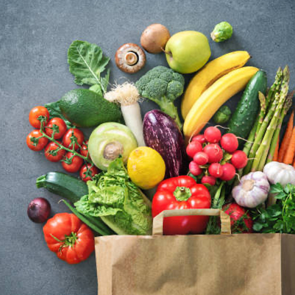
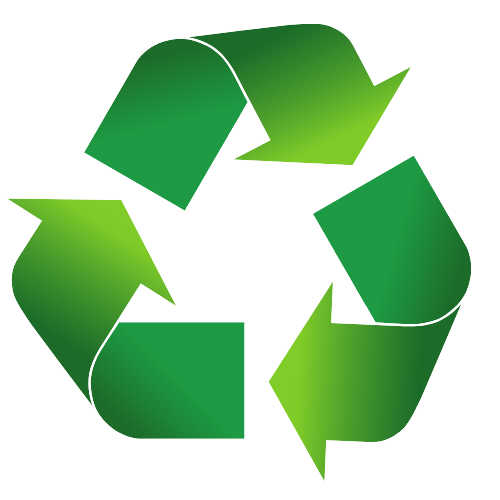
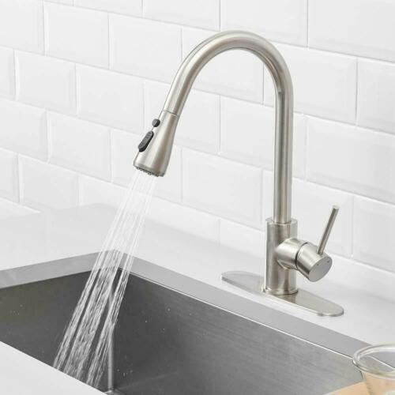
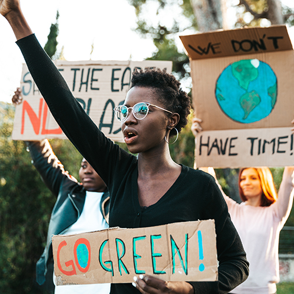

Recommendations
What can we do?
Food Changes
- Eat at least 1 vegeterian meal a week
- Switch to less carbon intensive meats
- Eliminate the transport of food
- Food delivery services produce greenhouse gas emissions

Waste Changes
- Shop green
- Consider a product's durability, sustainability, and ease of recycling
- Buy products with recycled content
- Buy used items
- Reduce food waste
- Buy what you need
- Compost scraps
- Donate unused food
- Reuse and repurpose
- Old clothing
- Grocery bags
- Containers

Transportation Changes
- Use green modes of transportation
- Walking
- Biking
- Carpooling
- Public transportation
- Drive smart
- Go easy on the breaks and gas
- Use cruise control
- Keep your car well-maintained
- Observe the speed limit
- Vehicle purchases
- Choose a vehicle with higher miles per gallon
- Choose an electric vehicle (EV)
- Choose an energy-saving EV charger
- Choose a nice, used vehicle
Water Changes
- Use water efficiently
- Turn off running faucets
- Run your washer with a full load using cold water
- Check for water leaks and have them fixed
- Shower changes
- Install low-flow showerheads
- Take shorter showers

Advocacy
- Explore/Join these groups to make a difference
